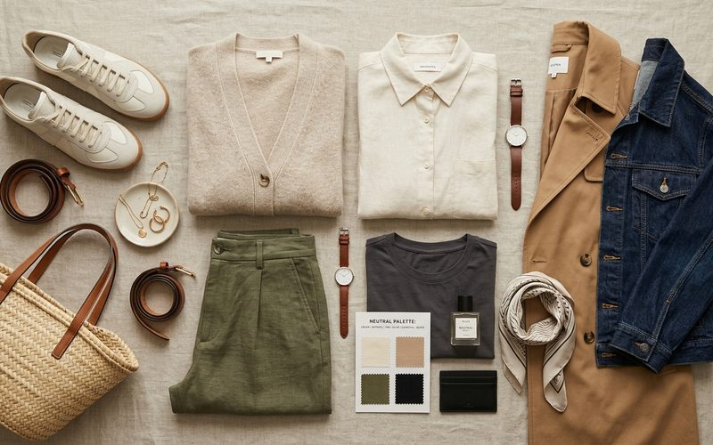

Toda garimpadora que construiu um guarda-roupa funcional com o tempo chegou a uma conclusão parecida: algumas cores são arquitetura, outras são decoração. As cores de arquitetura, os neutros e os quase-neutros, formam a base sobre a qual tudo funciona. As de decoração, os saturados, os neóns, os tons vivos, são os pontos de interesse que fazem o conjunto memorável. Saber quais são quais, e como usá-los juntos, é a chave para garimpar com intenção e para construir um guarda-roupa que funcione de verdade.
Nos brechós, o domínio das cores que funcionam juntas tem um valor prático adicional: você vai encontrar peças de épocas e estilos diferentes, e a coesão de paleta é o que vai fazer esse conjunto diverso parecer um guarda-roupa intencional em vez de uma coleção aleatória.
Preto, branco e cinza são os neutros absolutos, eles combinam com qualquer outra cor sem criar conflito. No guarda-roupa, são os melhores candidatos para as peças mais usadas: calças, blazers, saias estruturadas. Mas além desses três, há os neutros quentes, caramelo, cáqui, areia, terracota suave, que combinam com praticamente tudo dentro de uma paleta quente ou mesclada. E os neutros frios, azul marinho, cinza ardósia, verde musgo escuro, que funcionam como neutros dentro de uma paleta fria ou de contraste.
O azul marinho (navy) é talvez o neutro mais subestimado no guarda-roupa feminino. Ele combina com preto (sim, navy com preto funciona), com branco, com caramelo, com vermelho, com verde, com mostarda. Uma calça ou blazer navy de brechó é uma das aquisições mais versáteis possíveis. O camel, o tom de camelo, entre o bege e o âmbar, tem a mesma qualidade coringa, especialmente no outono/inverno belo-horizontino: ele harmoniza naturalmente com marrom, vinho, verde, azul e cobre.
Cores saturadas, vermelho, mostarda vibrante, verde esmeralda, azul cobalto, funcionam melhor quando são a única cor intensa do look. A combinação clássica é: cor saturada com neutro. Um blazer vermelho com calça preta e blusa branca. Um vestido verde esmeralda com sandália de couro cru e bolsa camel. Ao garimpar peças de cor saturada, verifique se a intensidade da cor ainda está preservada, desbotamento excessivo compromete o impacto que é a razão de ser da peça.
Desenvolver sua paleta pessoal é um processo que acontece gradualmente, à medida que você observa o que funciona para a sua pele, o seu cabelo, os ambientes onde você vive. O brechó é um excelente laboratório para essa experimentação: com investimento menor, você pode arriscar aquele verde esmeralda que nunca usou, descobrir que ele faz algo especial com o seu tom de pele, e incorporá-lo com confiança ao guarda-roupa. A cor certa, na peça certa, muda tudo.